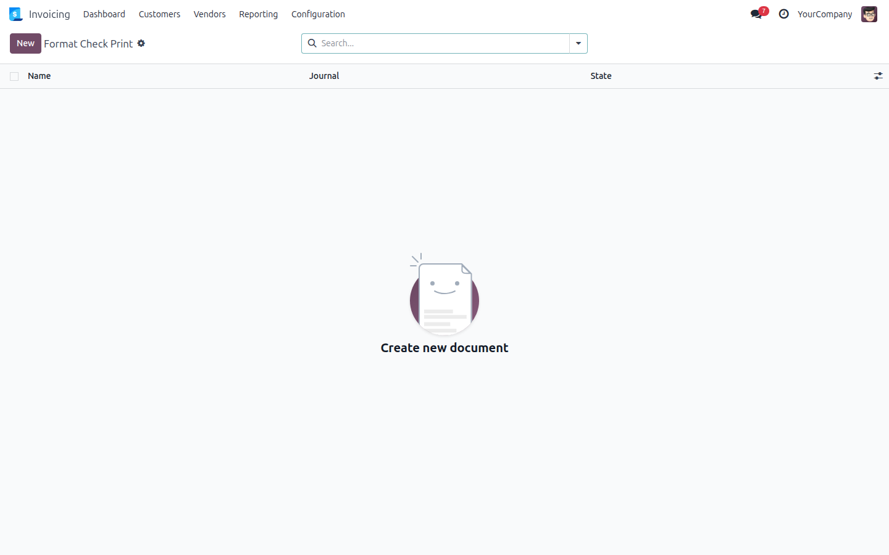
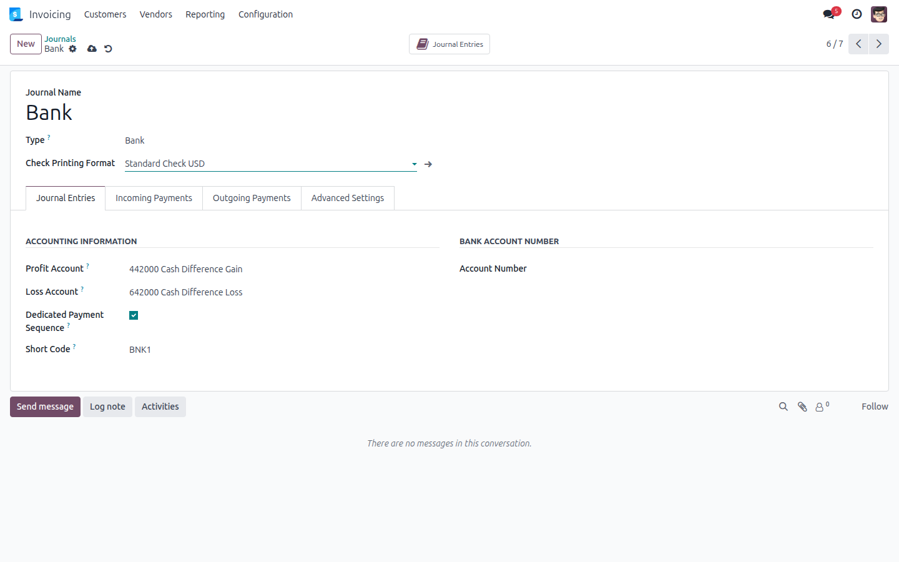
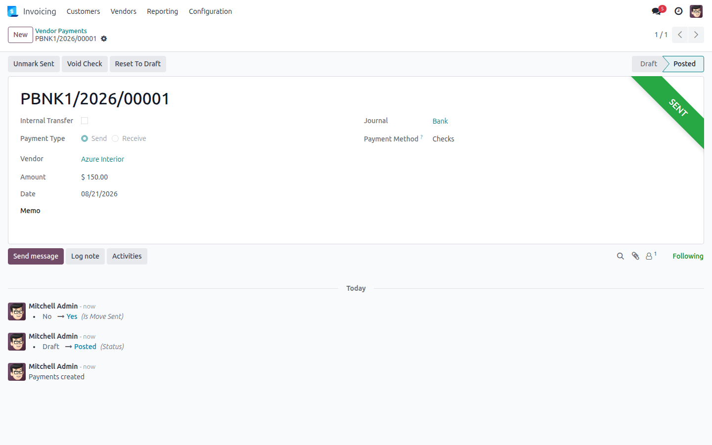

Translated languages


Design and print your own check layout directly from Odoo. Set exact coordinates for the date, partner, amount, amount in words and voucher detail, and print checks straight from your vendor payments.
Go to Accounting/Invoicing > Configuration > Check Print and create a new format.

Enable the blocks you need (Date, Partner, Amount, Amount in letters, Not Negotiable, Voucher) and set the position (top/left/width/height in cm), style and format of each one to match your physical check paper. Click "Set Done" to generate the printable report, its QWeb view and paper format automatically - no XML/QWeb editing required.
In Configuration > Journals, open your bank journal and select the "Check Printing Format" you just created.

Post a vendor payment with the "Checks" payment method and click "Print Check". The PDF is generated with your custom layout and the payment is marked as sent.
